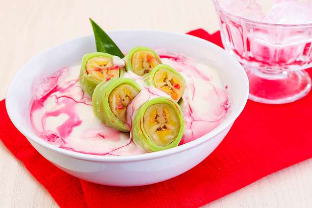

Resep Es pisang ijo
Bahan-Bahan:
- Pisang kepok matang 5 buah, kukus
- Tepung beras 75 gram
- Tepung terigu 75 gram
- Santan 200 ml
- Air pandan 75 ml
- Pasta pandan 3 tetes
- Gula pasir 40 gram
- Tepung beras 50 gram
- Santan kental 300 ml
- Gula pasir 5 sendok makan
- Garam secukupnya
- Sirup Cocopandan secukupnya
- Susu kental manis secukupnya
- Kacang yang ditumbuk kasar secukupnya
- Es Batu secukupnya
Bahan Bubur:
Bahan Pelengkap:
Langkah-Langkah:
- Langkah 1
- Pertama-tama kamu buat dulu kulit pisang ijonya. Langkah 2
- Siapkan wadah, campung tepung beras, tepung terigu, dan gula kemudian aduk hingga rata Langkah 3
- Tambahkan pula santan, air pandan, dan pasta pandan. Aduk kembali hingga membentuk adonan yang tidak mengumpal. Langkah 4
- Siapkan pula loyan yang tahan panas, masukkan adonan ke dalam loyang dan kukus selama kurang lebih 30 menit. Langkah 5
- Setelah adonan matang, angkat, dan tunggu hingga uap panasnya hilang. Langkah 6
- Lalu aduk-aduk menggunakan spatula hingga menjado adonan yang kalis dan mudah dibentuk. Langkah 7
- Kemudian ambil 1 lembar daun pisang yang telah dilayukan, ambil 4 sendok makan adonan kulit pisang ijo tadi, ratakan diatas kulit pisang. Langkah 8
- Ambil 1 buah pisang, letakkan di atas kulit, lalu gulung daun pisang hingga adonan kulit tadi menutupi seluruh pisang. Langkah 9
- Tekan-tekan ujung-ujungnya agar ujung pisang tertutup adonan dan pisang pun menjadi padat. Tusukkan lidi pada ujung-ujung daun pisang. Langkah 10
- Setelah semua pisang telah tertupi adonan, maka kini bisa mempersiapkan panci untuk mengkukus. Langkah 11
- Kukus pisang ijo selama 15-20 menit. Kemudian angkat dan dinginkan. Langkah 12
- Sambil menunggu pisangnya matang, kamu dapat mempersiapkan buburnya Langkah 13
- Campur santan kental, tepung beas, gula, dan garam lalu masak dengan menggunakan api kecil sambil terus di aduk-aduk. Langkah 14
- Masak hingga bubur mendidih dan menjadi kental. Apabila muncul letupan dari bubur, itu tandanya bubur telah matang. Langkah 15
- Setelah matang, angkat dan biarkan dingin.
- 1.Ambil piring saji, letakkan es batu di dasar piring.
- 2.Siram di atasnya dengan bubur, kemudian susun irisan pisang ijo di atas bubur. Tambahkan kacang tumbuk, siram
- 3.dengan sirup cocopandan dan susu kental manis.
- 4.Es Pisang Ijo pun siap dinikmati.
Penyajian